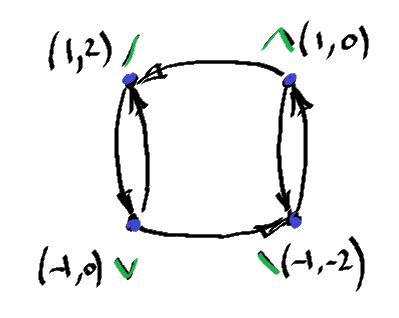

https://github.com/octopus-vulgaris/research_problem
play research_problem.ipynb
Here is a sample of technical writing from a research problem report. The behavior of a mechanical system was considered, which consisted of two pistons linked by springs with different stiffness. The movement of the pistons was constrained in the vertical direction. As a result, the relationship between the displacement of the second piston and the first piston was described.
We can obtain the force at piston due the spring deformation using the following equations:
Spring length at initial moment:
Length after deformation:
-- displacement from a position of relaxation
The force induced by spring deformation is a linear function:
where
-- spring stiffness
-- spring deformation
Therefore, we can get the spring force:
Finally, force at the piston is evaluated by:
For the sake of clarity, the ratio can be expressed as , where is an angle between the spring and the horizontal line.
The last equation represent the Force Displacement curve (FD-curve) of the piston.
To understand the kinematics of the system, we will use the principle of equilibrium of Y-forces. We will vary the position of the second piston and, for each position, find the coordinate of the first piston such that the Y-forces induced by the deformed springs are in equilibrium.
Follow the approach above describe the behave of the system. Observe the relaxation position.
Slider sets the coordinate of the second piston (var), root variable shows the coordinate of the first one calculated as roots of the equation. Using the function we can visually determine the force acting on the first piston at the root position.
At the position shown on picture above we can see that the system have three points of equal Y-forces. Two of them are stable and one at coordinate unstable. The domain of the root in the positive half of the plane is unreachable if there are no dynamical oscillation processes of the free piston. However, the piston can reach this domain if it moves from down to up.
When the curve of the 1st piston position deforms to a single-root form, the formation of a new root occurs on the opposite branch, and the solution jumps to the right father point. The behavior of the system is specific to this threshold. The switch triggers a change in the force direction on the second piston, which in turn causes the springs to move the system towards the relaxed down position. Similar behavior can be observed when the system reaches the first potential threshold, but without the first piston jumping. Another specific feature of the system is that the potential barrier has a maximum derivative before reaching its own maximum when the system starts to move towards the next stable state.
The system has four stable states, characterized by equal spring lengths. The coordinates of these states are
The graph of states is shown below.

The system with a free massless piston and two springs have described. The specific of the kinematics revealed as switching behave has obtained.
Hmmm.... At this point, I cannot exactly imagine how it may be used to create passive functionality. However, if extra conditions are known, this nonlinearity, with some modification, can be used for specific tasks. At the very least, we need to know which parameter needs control, whether it be the position of pistons, force acting on pistons, configuration of the system, switches between stable states, etc. Undoubtedly, it may be used for modeling objects that behave similarly, as well as for non-linear suspension systems and for dampening shocks and vibrations.